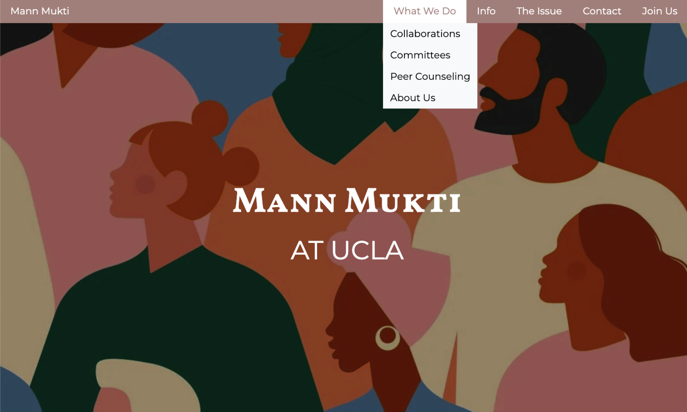

MannMukti @ UCLA
Commissioned Project | March 2021 - present Next.js, Vercel Team: Megan Calverley, Ash Shah
MannMukti is a club dedicated to fostering healthy, open dialogue of South Asian mental health issues in an effort to remove stigma, improve awareness, and promote self-care. The UCLA chapter asked us to revamp their Wix website. After discussing their needs and designing the website, we built a skeleton site using Next.js and deployed it on Vercel. Currently, we are awaiting feedback on the initial product, after which we will refine the site and the club will replace the placeholder content.
Check out the website here.